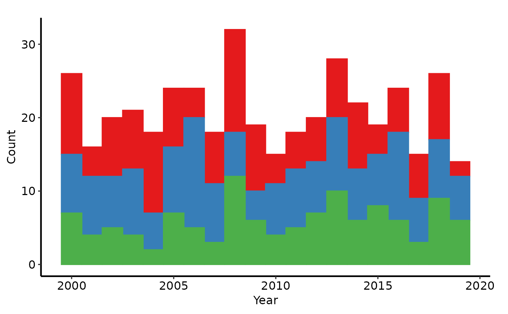
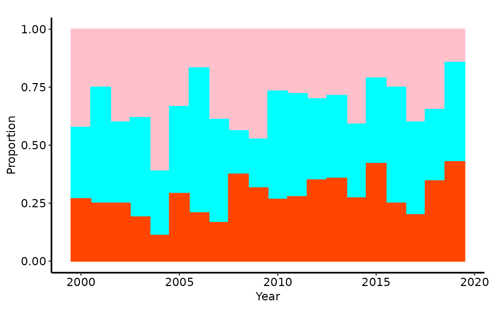

Builds a stacked (or proportional fill) histogram for a grouped numeric variable. The returned ggplot object intentionally omits scale and label modifications so the caller can layer on their own colour/fill scales, axis labels, and themes without fighting existing defaults.
Usage
stacked_histogram(
data,
x_col = "year",
group_col = "category",
binwidth = 1,
position = c("stack", "fill")
)Arguments
- data
A data frame.
- x_col
Name of the numeric column to bin along the x-axis.
- group_col
Name of the column whose distinct values define the stacked groups. Will be coerced to a factor inside the aesthetic mapping.
- binwidth
Width of each histogram bin, in the same units as `x_col`. Defaults to `1`.
- position
Either `"stack"` (raw counts, the default) or `"fill"` (proportions that sum to 1 within each bin).
Value
A ggplot object. Add scales, labels, and
themes with the usual `+` operator.
Examples
dta <- sample_stacked_histogram_data()
# --- Count histogram (default) -------------------------------------------
p_count <- stacked_histogram(dta, x_col = "year", group_col = "category")
# Add colour / fill scales and a theme
p_count +
ggplot2::scale_fill_brewer(palette = "Set1", name = "Category") +
ggplot2::scale_color_brewer(palette = "Set1", name = "Category") +
ggplot2::labs(x = "Year", y = "Count") +
hvti_theme("manuscript")

# Save to disk
if (FALSE) { # \dontrun{
ggplot2::ggsave(
filename = "histogram_count.pdf",
plot = p_count +
ggplot2::scale_fill_brewer(palette = "Set1", name = "Category") +
ggplot2::scale_color_brewer(palette = "Set1", name = "Category") +
ggplot2::labs(x = "Year", y = "Count") +
hvti_theme("manuscript"),
width = 11,
height = 8
)
} # }
# --- Proportional (fill) histogram ----------------------------------------
p_fill <- stacked_histogram(dta, x_col = "year", group_col = "category",
position = "fill")
# Manual colour palette with custom legend labels
p_fill +
ggplot2::scale_fill_manual(
values = c("1" = "pink", "2" = "cyan", "3" = "orangered"),
labels = c("1" = "Group A", "2" = "Group B", "3" = "Group C"),
name = "Category"
) +
ggplot2::scale_color_manual(
values = c("1" = "pink", "2" = "cyan", "3" = "orangered"),
guide = "none"
) +
ggplot2::labs(x = "Year", y = "Proportion") +
hvti_theme("manuscript")

# Save the proportion plot
if (FALSE) { # \dontrun{
ggplot2::ggsave(
filename = "histogram_proportion.pdf",
plot = p_fill +
ggplot2::scale_fill_manual(
values = c("1" = "pink", "2" = "cyan", "3" = "orangered"),
name = "Category"
) +
ggplot2::scale_color_manual(
values = c("1" = "pink", "2" = "cyan", "3" = "orangered"),
guide = "none"
) +
ggplot2::labs(x = "Year", y = "Proportion") +
hvti_theme("manuscript"),
width = 11,
height = 8
)
} # }